Plugins
Overview
Novi plugins are the separately compiled modules.
The work of plugins can be traced exclusively in the Edit mode, while the configuration of the plugins takes place in the Design mode.
Plugins management panel is located on the developer's toolbar.
Plugins configuration area includes the following:
- Trigger for the panel opening
- The list of the installed plugins
- Configuration area of the selected plugin
- querySelector field (required) - is indicated as a CSS rule (class, id, etc.). The item defined by the selector will be processed by the plugin.
- ‘Save’ option.
{kind=link}
The plugin settings may differ, the only required field is the querySelector.
Background Image Plugin
Allows you to change the items background image.
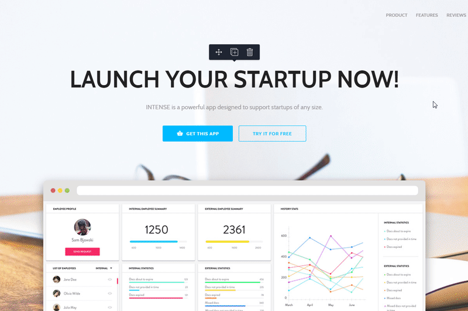{kind=link}
Plugin setup:
- querySelector (by default is set to ".novi-background") - allows you to define the item processed by the plugin.
Editor panel:
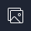 - Trigger for the plugin display
Image select area (Media Gallery)
- The image to be added is selected by double-clicking the left mouse button on the target image.
You can learn more about media gallery capabilities under "Media gallery" item (link) in the "Features" section.
Image upload area
- "Keep original aspect ratio" option that allows to maintain the proportions of the replaced image.
The detailed plugin documentation is available at the following link
Background Plugin
Lets you change the background color of the element.

Plugin setup:
- querySelector (".novi-background" by default) lets you define the element, to which the plugin functionality will be applied.
Editor panel:
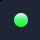 - trigger for plugin display (the color depends on the element background).
Color selection area
- Background Fill Type" switcher displays a panel for color or element gradient change.
More detailed plugin documentation is available under the following link
Image Plugin
Allows you to replace an image.
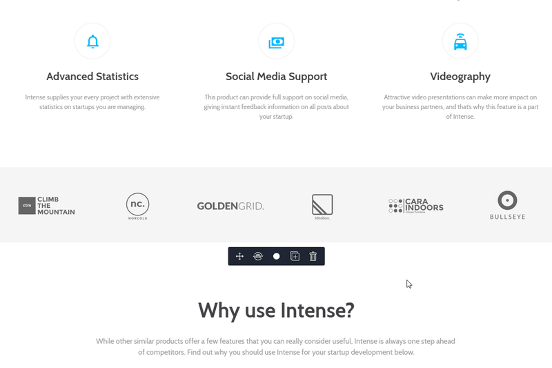{kind=link}
Plugin setup:
- querySelector (by default is set to "img[src]") - allows you to define the item processed by the plugin.
Editor panel:
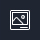 - Trigger for the plugin display
Image selection area (Media Gallery)
- The image to be added is selected by double-clicking the left mouse button on the target image.
You can learn more about media gallery capabilities under "Media gallery" item in the "Features" section.
Image crop area:
- "Keep original aspect ratio" setting is used for preserving the aspect ratio of the original image.
The detailed plugin documentation is available at the following link.
Iframe Plugin
Allows you to specify a resource for displaying the content within a frame.
.gif)
Plugin setup:
- querySelector (by default is set to "iframe[src]") - allows you to define the item processed by the plugin.
Editor panel:
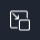 - Trigger for the plugin display
Frame configuration area:
- Field for specifying the resource for the frame
The detailed plugin documentation is available at the following link.
Link Plugin
Allows you to change the link.

Plugin setup:
- querySelector (by default is set to "a[href]") - allows you to define the item processed by the plugin.
- applyToProjectElements (enabled by default) – allows enabling/disabling replacement of all links in the project (including presets and all pages) when saving the plugin's settings.
- favoriteLinks – allows setting favorite project links.
Editor panel:
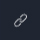 - Trigger for the plugin display
Plugin management area
Link Type – allows to select a link type for insertion out of 3 types:
- "Pages" – all project pages are available.
- "Favorites" – all links indicated in plugin settings are displayed.
- "Custom" – allows setting a custom link.
The "Custom" tab will be opened by default, except the cases when a link on the chosen element corresponds with one of the pages or a favorite link.
The detailed plugin documentation is available at the following link.
Material Parallax Plugin
Works with the Materianize Parallax script, it allows you to replace the source images for parallax using the visual editing tools.
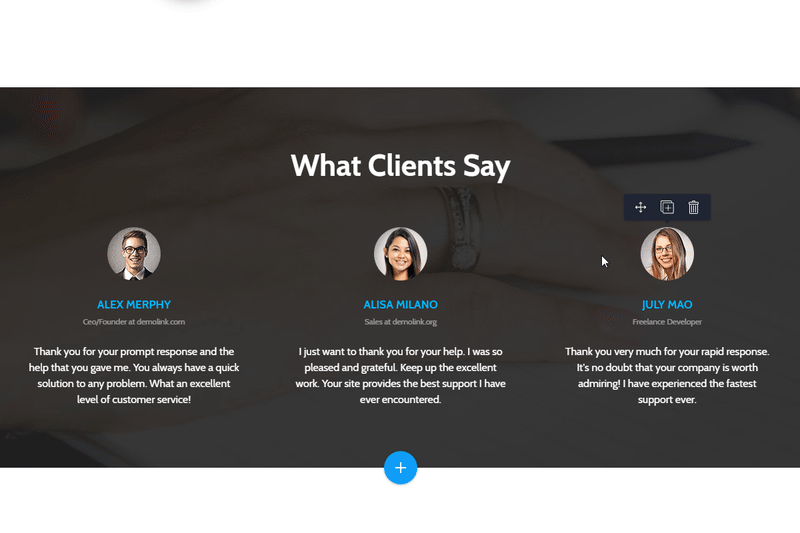{kind=link}
Plugin setup:
- querySelector (by default is set to ".parallax-container") - allows you to define the item processed by the plugin.
Editor panel:
- Trigger for the plugin display
Image upload area:
- "Choose file" button that allows to select an image
- "Upload background image" button that allows to upload the selected image
Image selection area (Media Gallery)
- The image to be added is selected by double-clicking the left mouse button on the target image.
You can learn more about media gallery capabilities under "Media gallery" item (link) in the "Features" section.
Image crop area:
- "Keep original aspect ratio" setting is used for preserving the aspect ratio of the original image.
The detailed plugin documentation is available at the following link.
Label Plugin
Allows you to change the label of the form field.
.gif)
Plugin setup:
- querySelector (by default is set to "label") - allows you to define the item processed by the plugin.
Editor panel:
 - Trigger for the plugin display
- Trigger for the plugin display
Plugin configuration area
- Field for specifying the label value
The detailed plugin documentation is available at the following link.
Countdown Plugin
Lets you set up jQuery using visual tools.
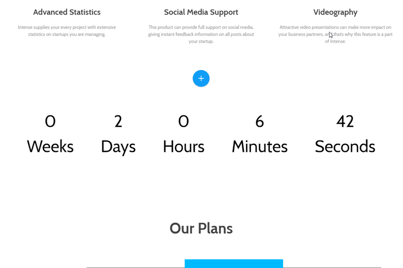{kind=link}
Plugin setup:
- querySelector (".novi-countdown" by default) - lets you define the element, to which the plugin functionality will be applied.
Editor panel:
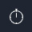 - trigger for plugin settings display.
Plugin settings area:
- "Type" switcher lets you choose the countdown type.
More detailed plugin documentation is available under the following link.
Google Map Plugin
Map plugin allows you to change the map settings visually.
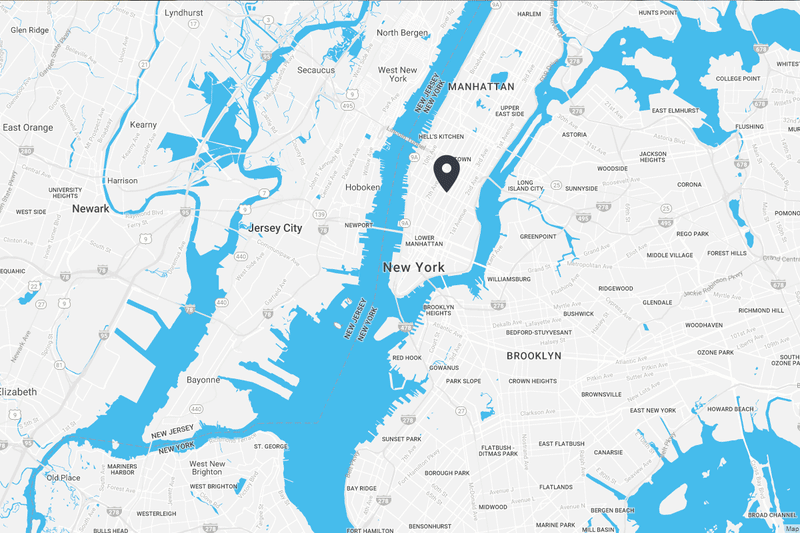{kind=link}
Plugin configuration:
- querySelector (by default is set to ".google-map-container") - allows you to define the item processed by the plugin.
Editor panel:
- Trigger for the map settings display
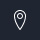 - Trigger for the map settings display
Map settings panel:
- "API Key" field - allows you to set the API key to use Google Maps JavaScript API. (How to get API key)
- "Map Center" field - allows you to set the coordinates of the map center.
- "Zoom" field - allows you to define the zoom level.
- "Style" select option - allows choosing the map styling (https://snazzymaps.com/ service)
- "Marker Icon" and "Active Marker Icon" select options - allow you to set the marker for the default and active states.
Map pins settings panel:
- "Marker Location" field - allows you to set the marker location
- "Marker Description" field - allows you to specify the marker description (shows up in the active state)
- "Add marker" button - allows to add the "Marker Location" and the "Marker Description" group for adding the new marker.
More detailed plugin documentation is available under the following link.
Icons plugin
Allows you to replace the icons.
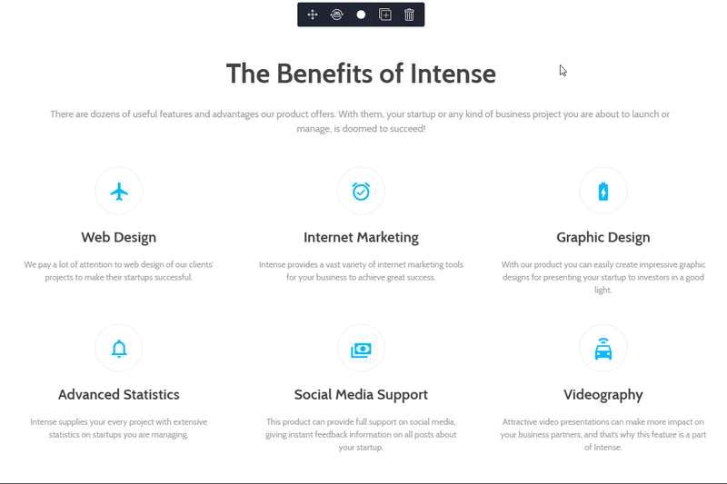{kind=link}
Plugin configuration:
- querySelector (by default is set to ".novi-icon") - allows you to define the item processed by the plugin.
Editor panel:
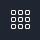 - Trigger for the icons manager display
- Double-click the target item with the left mouse button or press the "Insert Icon" button to choose the icon for pasting.
The detailed plugin documentation is available at the following link.
Owl Carousel plugin
Allows you to configure the Owl carousel in the visual mode.
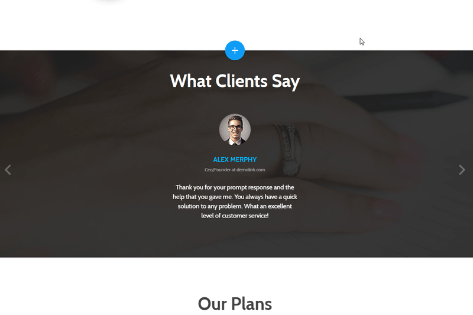{kind=link}
Plugin configuration:
- querySelector (by default is set to ".owl-carousel") - allows you to define the item processed by the plugin.
Editor panel:
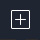 - Trigger for adding the slide (in case of hovering the carousel wrapper, the last slide will be cloned)
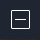 - Trigger for deleting the slide (in case of hovering the carousel wrapper, the last slide will be removed)
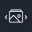 - Trigger for the carousel settings display
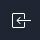 - Trigger for moving the slide to the left
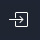 - Trigger for moving the slide to the right
Carousel settings panel:
- "Visible items" field - allows you to define the number of items to show up. You can make the number of the visible items vary depending on the screen size. In order to use this functionality, switch to the new screen size using the builder resizer tool and then specify the new value for the "Visible items" option.
- "Indent between items" field - allows you to set the spaces between the carousel items. You can make the distance between the items vary depending on the screen size. In order to use this functionality, switch to the new screen size using the builder resizer tool and then specify the new value for the "Indent between items" option.
- "Enable Loop" switcher - allows enabling/disabling the carousel loop. You can try it in the builder preview mode.
- "Carousel Autoplay" switcher - allows enabling/disabling the carousel autoplay. You can try it in the builder preview mode.
- "Carousel Autoplay Delay" field - allows you to set the sliding delay. It works only if the "Carousel Autoplay" option is enabled, and is available for testing in the builder preview mode.
The detailed plugin documentation is available at the following link.
Campaign Monitor Plugin
Allows you to configure the form to work with the Campaign Monitor service.
.gif)
Plugin setup:
- querySelector (by default is set to ".novi-campaign-monitor") - allows you to define the item processed by the plugin.
Editor panel:
- Trigger for the plugin display
Form configuration area:
- "Campaign monitor signup url" field defined the action of the form
- "Campaign monitor input name" field defines the value of the name attribute of the input field.
Campaign monitor signup url can be obtained according to the following instructions:link.
The detailed plugin documentation is available at the following link.
Mailchimp Plugin
Allows you to configure the form to work with the Mailchimp service.
.gif)
Plugin setup:
- querySelector (by default is set to ".novi-mailchimp") - allows you to define the item processed by the plugin.
Editor panel:
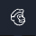 - Trigger for the plugin display
Form configuration area
- "Mailchimp signup url" field indicates the action of the form
Mailchimp signup url can be obtained according to the following instructions:link.
The detailed plugin documentation is available at the following link.
RD Mailform Plugin
Allows you to configure the RD Mailform form plugin using the visual editing tools.
.gif)
Plugin setup:
- querySelector (by default is set to ".rd-mailform") - allows you to define the item processed by the plugin.
- configPath ("bat/rd-mailform.config.json") - allows you to specify the path to the form settings file.
Editor panel:
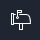 - Trigger for the plugin display
Plugin configuration area
- "Send emails to:" field indicates the email recipients.
- "Use SMTP server settings for email sending:" option allows you to configure the sending of messages using SMTP.
The detailed plugin documentation is available at the following link.
RD Instagram Feed Plugin
Allows you to configure the RD Instafeed instagram plugin using the visual editing tools.
.gif)
Plugin setup:
- querySelector (by default is set to ".novi-instafeed") - allows you to define the item processed by the plugin.
Editor panel:
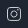 - Trigger for the plugin display
Plugin configuration area
- "Account" option allows to define the account ID to display the posts of.
- "Tag" option allows you to specify a tag to display the posts for.
The detailed plugin documentation is available at the following link.
RD Twitter Feed Plugin
Allows you to configure the RD Twitter Feed twitter plugin using the visual editing tools.
.gif)
Plugin setup:
- querySelector (by default is set to ".novi-twitter") - allows you to define the item processed by the plugin.
Editor panel:
- Trigger for the plugin display
Plugin configuration area
- "Twitter User Name" field specifies the author username, whose posts are displayed.
The detailed plugin documentation is available at the following link.
Camera Slider Plugin
Allows you to configure the jQuery plugin Camera slider with the help of visual editing tools.
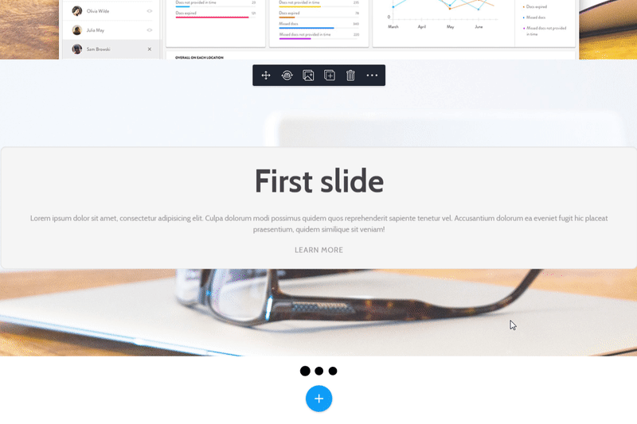{kind=link}
Plugin setup:
- querySelector (by default is set to ".novi-camera") - allows you to define the item processed by the plugin.
Editor panel:
- Trigger for the slide image replace option display
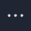 - Additional options (add/remove)
Image selection area (Media Gallery)
- The image to be added is selected by double-clicking the left mouse button on the target image.
You can learn more about media gallery capabilities under "Media gallery" item (link) in the "Features" section.
Image crop area:
- "Keep original aspect ratio" setting is used for preserving the aspect ratio of the original image.
The detailed plugin documentation is available at the following link
Swiper Slider Plugin
Allows you to configure the Swiper Slider using the visual editing tools.
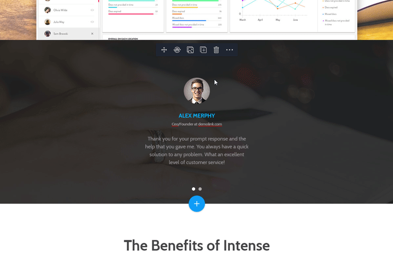{kind=link}
Plugin setup:
- querySelector (by default is set to ".swiper-container") - allows you to define the item processed by the plugin.
- effects( "slide", "fade") - allows you to choose the set of effects for the animation on switching between the slides.
Editor panel:
- Trigger for the plugin display
- Additional options (add/remove slide, slider configuration)
Image upload area
- "Choose file" button that allows to select an image
- "Upload background image" button that allows to upload the selected image
Image selection area (Media Gallery)
- The image to be added is selected by double-clicking the left mouse button on the target image.
You can learn more about media gallery capabilities under "Media gallery" item in the "Features" section.
Image crop area:
- "Keep original aspect ratio" setting is used for preserving the aspect ratio of the original image.
The detailed plugin documentation is available at the following link.
Vide Plugin
Lets you set up jQuery plugin Vide using visual tools.

Plugin setup:
- querySelector (".novi-vide" by default) lets you define the element, to which the plugin functionality will be applied.
Editor panel:
- trigger for displaying a substitutional poster (displayed when the video can not be loaded).
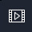 - trigger for displaying a substitutional video.
Media selection area (Media Gallery)
- The media file to be added is selected by double-clicking the left mouse button on the target image.
You can learn more about media gallery capabilities under "Media gallery" item (link) in the "Features" section.
Image crop area:
- "Keep original aspect ratio" setting is used for preserving the aspect ratio of the original image.
More detailed plugin documentation is available under the following link.
Light Gallery Plugin
This plugin allows you to configure Light Gallery using visual tools.

Plugin preferences:
- groupQuerySelector ("[data-lightgallery="group"]" by default) – allows defining the gallery group, to which plugin functionality will be applied.
- albumQuerySelector ("[data-lightgallery="dynamic"]" by default) - allows to define the gallery album, to which plugin functionality will be applied.
- itemQuerySelector ("[data-lightgallery="item"]" by default) - allows to define the gallery item, to which plugin functionality will be applied.
Editor area:
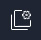 - Trigger for displaying gallery settings.
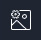 - Trigger for displaying gallery item settings.
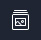 - Trigger for displaying gallery album settings.
Area of gallery settings:
- "Gallery slide animation" select – allows adjusting the animation of gallery items transition
- "Thumbnails" switcher – allows to enable/disable preview demonstration of gallery items.
- "Loop" switcher – allows to enable/disable the looping of gallery items
- "Autoplay" switcher – allows to enable/disable autoplay of gallery items
- "Gallery Autoplay Delay, seconds" field – allows configuring the time of item delay. Works only if autoplay of gallery items is enabled.
Area of gallery item settings:
- "Large image or video source" field- sets the path to the original image, video, or URL. Preview of the stated resource is also available.
- "Item Description (HTML markup is supported)" editor area – sets the markup or plain text for gallery item description.
*Be aware! To replace a gallery thumbnail you can use the image plugin, thereby replacing the image displayed to a user.
Area of gallery album settings:
- "Add Gallery Item" button –adds a new item to your album
You can perform the following configuration of your album using manipulations with gallery items, just by hovering over the target item and choosing settings icon.
You can also delete an item by pressing the deletion button when hovering over it.
More detailed plugin documentation is available under the following link.